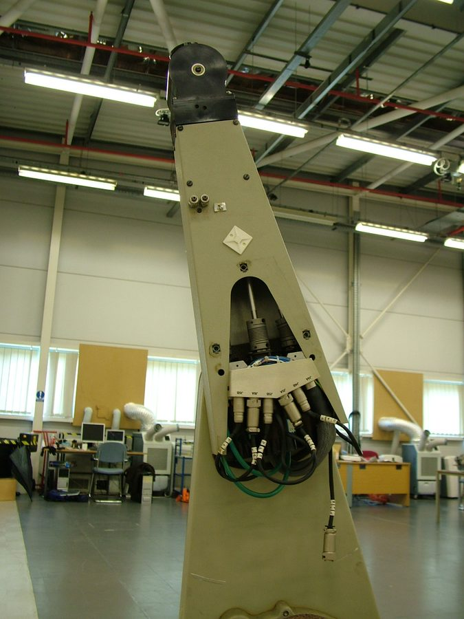

Robôs Industriais
Portal técnico e educativo com os principais modelos de robôs industriais usados em processos produtivos automatizados: características, funcionamento, aplicações e integração com a Internet das Coisas.

O conceito de Internet das Coisas
A Internet das Coisas designa a interconexão de objetos físicos dotados de capacidade de sensoriamento, processamento e comunicação, capazes de coletar e trocar dados entre si e com sistemas de informação, sem necessidade de intervenção humana em cada transação.
No contexto industrial, esse conceito recebe a denominação específica de IIoT, ou Industrial Internet of Things. A diferença em relação à IoT de consumo não é apenas de escala: aplicações industriais exigem determinismo temporal, disponibilidade elevada, tolerância a ambientes eletricamente ruidosos e requisitos rigorosos de segurança funcional, uma vez que a falha de um dispositivo pode interromper uma linha de produção ou colocar operadores em risco.
A arquitetura típica organiza-se em quatro camadas. A camada de percepção reúne sensores e atuadores em campo. A camada de rede transporta os dados por protocolos como Profinet, EtherNet/IP, Modbus TCP, MQTT e OPC UA. A camada de processamento divide-se entre a computação de borda, que executa análises críticas com baixa latência junto ao equipamento, e a nuvem, que consolida grandes volumes históricos. A camada de aplicação entrega o resultado em painéis, sistemas MES e ERP.
O conceito de Robótica Industrial
Segundo a norma ISO 8373, um robô industrial é um manipulador multifuncional reprogramável, controlado automaticamente, programável em três ou mais eixos, que pode ser fixo no local ou móvel para uso em aplicações de automação industrial. Três elementos dessa definição merecem destaque: a reprogramabilidade, que distingue o robô de uma máquina dedicada; a multifuncionalidade, que permite trocar a ferramenta e a aplicação; e o número mínimo de eixos controlados.
O marco inicial ocorreu em 1961 com a introdução do Unimate na linha de produção da General Motors, um braço de configuração polar. Com os microprocessadores na década de 1970 e o avanço do controle cinemático, surgiram as estruturas Cartesianas, SCARA e os braços antropomórficos de seis eixos.

A transição para a Indústria 4.0 introduziu a hiperconectividade, a inteligência artificial distribuída na borda e, fundamentalmente, a quebra das barreiras físicas entre humanos e máquinas. Atualmente, na Indústria 5.0, o foco deixa de ser puramente a velocidade de ciclo para se concentrar na resiliência, na sustentabilidade e na colaboração direta e segura entre operadores e sistemas robóticos.
Manipulador
Estrutura mecânica composta por elos e juntas que sustenta e movimenta a ferramenta no espaço de trabalho.
Controlador
Unidade que resolve a cinemática, gera as trajetórias e comanda os servoacionamentos de cada eixo.
Efetuador
Ferramenta acoplada ao punho: garra, tocha de solda, pistola de pintura, ventosa ou parafusadeira.
Sensoriamento
Encoders, sensores de força, visão artificial e scanners que informam posição, contato e ambiente.
A importância da automação industrial
A automação deixou de ser um diferencial competitivo para se tornar condição de permanência em mercados globais, especialmente diante da redução do ciclo de vida dos produtos e da demanda por customização em massa.
Produtividade e cadência
Robôs operam em regime contínuo de três turnos, sem perda de ritmo por fadiga. Em operações de pick-and-place, um robô Delta ultrapassa 150 ciclos por minuto de forma sustentada, patamar inatingível manualmente.
Repetibilidade e qualidade
A repetibilidade de décimos ou centésimos de milímetro elimina a variabilidade entre operadores e turnos, reduzindo refugo e retrabalho e viabilizando processos de tolerância estreita.
Segurança ocupacional
A robotização remove o ser humano de tarefas classificadas como dull, dirty and dangerous: ambientes com calor radiante, vapores químicos, ruído elevado e movimentação de cargas pesadas.
Flexibilidade produtiva
Diferente de máquinas dedicadas, o robô é reprogramável. A mesma célula pode produzir variantes distintas com troca de programa e de ferramenta, atendendo a cenários de alto mix e baixo volume.
Rastreabilidade
Cada operação gera registro digital: torque de aperto, tempo de ciclo, resultado de inspeção. Esse histórico sustenta certificações de qualidade e investigação de falhas de campo.
Requalificação do trabalho
A força de trabalho humana é promovida a tarefas cognitivas: julgamento crítico em tempo real, inteligência adaptativa perante imprevistos, destreza fina e customização do produto final.
A relação entre robótica e Internet das Coisas
O robô industrial moderno é simultaneamente um consumidor e um produtor de dados. É essa dupla natureza que o insere no ecossistema da Internet das Coisas.
O robô como consumidor de dados
Sensores externos alimentam a decisão do robô em tempo real. Câmeras de visão artificial informam a posição e a orientação de peças não paletizadas; encoders de esteira permitem o rastreamento de produtos em movimento; scanners a laser definem zonas dinâmicas de segurança; sensores de força no punho ajustam a pressão de montagem. Sem esses dados, o robô executa apenas trajetórias fixas pré-ensinadas.
O robô como produtor de dados
Cada eixo do robô publica posição, velocidade, corrente e torque em ciclos de poucos milissegundos. Interfaces como a KUKA RSI, o FANUC FIELD e o ABB Ability transmitem esses fluxos por Ethernet industrial, alimentando painéis de OEE, sistemas MES e modelos de manutenção preditiva.
Manutenção preditiva
A evolução da assinatura de torque de uma junta revela o desgaste progressivo de redutores harmônicos e cicloidais muito antes da falha funcional. Algoritmos comparam a curva atual com a linha de base registrada na instalação e emitem ordem de serviço com semanas de antecedência.
Gêmeo digital
A réplica virtual da célula robótica, alimentada continuamente pelos dados reais, permite simular novas trajetórias, validar tempos de ciclo e testar alterações de layout sem interromper a produção.
Protocolos de integração
Profinet e EtherNet/IP garantem o determinismo necessário ao controle de movimento. OPC UA fornece semântica padronizada e independente de fabricante para integração vertical com MES e ERP. MQTT transporta telemetria agregada para a nuvem com baixo consumo de banda.
Coexistência simbiótica
O futuro das fábricas inteligentes caminha para uma arquitetura híbrida: os robôs absorvem os esforços repetitivos e insalubres, enquanto o operador assume as decisões que exigem julgamento e adaptação, mediados por interfaces homem-máquina intuitivas.
As sete topologias de robôs
Clique em um robô para ir direto à sua ficha técnica, com funcionamento, características, aplicações, integração com IoT e três modelos comerciais de fabricantes distintos.
Tabela comparativa dos sistemas robóticos
Comparação direta entre as sete topologias, considerando velocidade nominal, carga útil, precisão, custo relativo de aquisição e complexidade de implementação.
O futuro da coexistência na Indústria 4.0 e 5.0
A análise comparativa das arquiteturas cinemáticas revela que não existe uma topologia robótica universalmente superior, mas sim soluções otimizadas para demandas de engenharia específicas. Enquanto sistemas Delta continuam insuperáveis em taxas de aceleração e braços articulados de grande porte dominam tarefas pesadas da indústria de base, a ascensão dos robôs colaborativos estabelece a base para o modelo de manufatura da Indústria 5.0.
O mercado global passa por uma transformação impulsionada pelo encurtamento do ciclo de vida dos produtos e pela demanda por customização em massa, fenômeno sintetizado pela sigla HMLV, de High-Mix, Low-Volume. A automação tradicional performa com excelência em produção invariável em larga escala; porém, quando as linhas precisam de trocas frequentes de ferramentas e reconfigurações semanais de leiaute, a automação rígida torna-se economicamente inviável.
O futuro das fábricas inteligentes não caminha para a automação total com exclusão da presença humana, mas para uma arquitetura híbrida de coexistência simbiótica. Os robôs absorvem os esforços repetitivos, insalubres e de alta repetibilidade, enquanto a força de trabalho humana é promovida a tarefas essencialmente cognitivas: julgamento crítico em tempo real, inteligência adaptativa perante imprevistos e customização do produto final.
Automação rígida
Alto volume, baixo mix de produtos, configuração fixa e células enclausuradas. Retorno sobre o investimento entre 24 e 36 meses.
Automação flexível
Alto mix de produtos, lotes customizados, integração segura com humanos e reprogramação rápida no chão de fábrica. Retorno entre 6 e 12 meses.
Critério de escolha
A topologia deve ser selecionada pela combinação de carga útil, alcance, cadência exigida, precisão necessária e grau de interação humana previsto na célula.